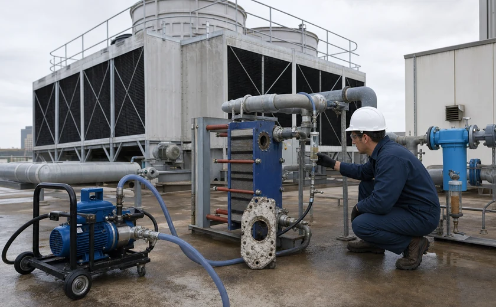
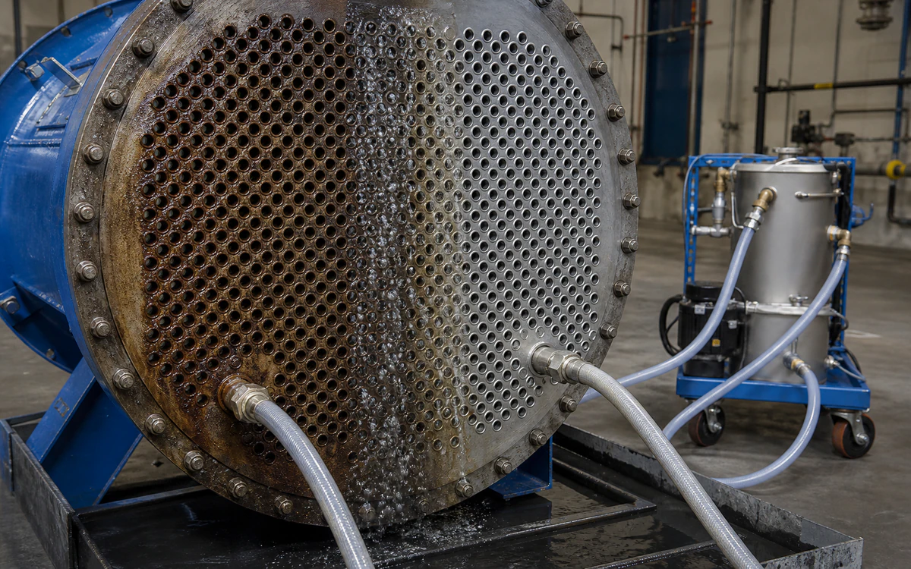
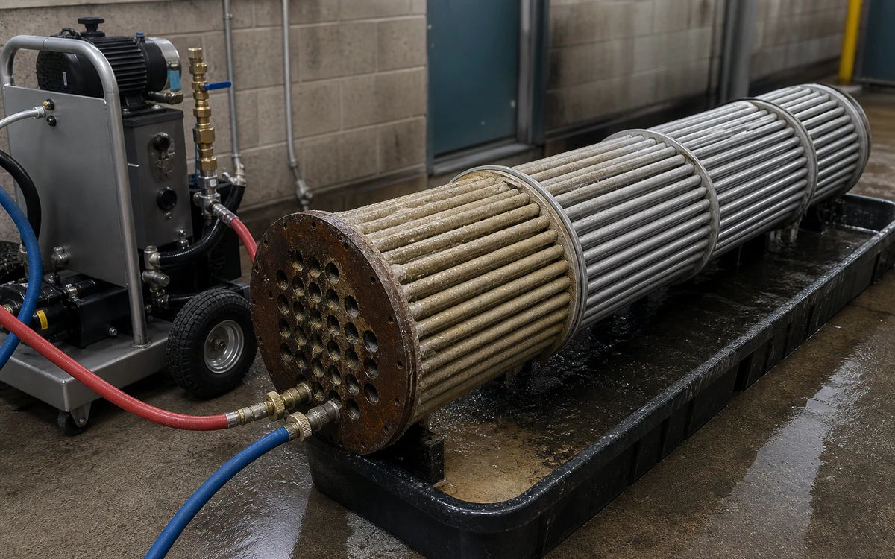

Reduce callback risk with a safer descaling and water-treatment kit.
Callback-driven descaling and hazmat handling costs slow mechanical contractors and water-treatment teams.
- CleanPlate and shell heat exchangers, boilers, cooling towers, coils, pumps, closed loops, strainers, and temporary circulation rigs
- RemoveCarbonate and mixed mineral scale, iron oxide, corrosion product, silt, and water-side organic film
- MethodLOTO, isolate, establish temporary circulation, monitor descaling, drain, rinse, inspect, and recommission
- BoundaryWritten method statement, LOTO, pressure relief, venting, hose/rig compatibility, spill containment, owner approval, and Legionella controls.
- Open task controls and documents
Why VertKleen fits Mechanical Contractors & Water Treatment.
Mechanical contractors and water-treatment providers need chemistry that works in the field and still survives owner review. HCR, Descaler, and WaterSafe60 cover scale, passivation, and cooling-water program needs without making handling the main obstacle.
Review field evidence


VertKleen products for Mechanical Contractors & Water Treatment.
VertKleen options for Mechanical Contractors & Water Treatment workflows.
Descale isolated boilers, heat exchangers, coils, and water loops with a documented handoff back to treatment.
Task controls first. Product choice follows the asset, deposit, materials, operating window, and discharge route.
- Task
- Descale isolated boilers, heat exchangers, coils, and water loops with a documented handoff back to treatment.
- Asset / substrate
- Plate and shell heat exchangers, boilers, cooling towers, coils, pumps, closed loops, strainers, and temporary circulation rigs
- Soil / deposit
- Carbonate and mixed mineral scale, iron oxide, corrosion product, silt, and water-side organic film
- Starting chemistry
- VertKleen CIP HCR, VertKleen Descaler, WaterSafe60
- Concentration
- Choose within the current HCR/Descaler guide from deposit, metallurgy, loop volume, and reaction rate; do not use a universal ratio.
- Process controls
- Log flow, solution temperature, concentration, pH/reaction trend, dwell, iron/hardness response, rinse conductivity, and restart chemistry.
- Shutdown / containment
- Written method statement, LOTO, pressure relief, venting, hose/rig compatibility, spill containment, owner approval, and Legionella controls.
- Verification endpoint
- Recovered flow, pressure drop, or approach temperature; stable rinse baseline; clean inspection point; treatment residual restored.
Review the current safety and application file.
Confirm revision, product identity, material compatibility, and application scope before site approval.
Bring us your Mechanical Contractors & Water Treatment cleaning task.
The request opens with asset, soil, operating conditions, materials, wastewater route, and buying deadline already prompted.